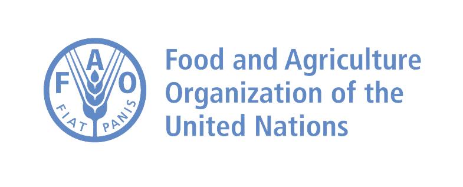
Global Fire Management Hub · Terminal Executive Summary
Strengthening wildfire risk reduction and preparedness through Integrated Fire Management across Latin America, the Caribbean and beyond.
In partnership with Canada
With the support of the Government of Canada through Global Affairs Canada, the Food and Agriculture Organization of the United Nations advanced a holistic shift in how fire is governed, understood and managed — from emergency suppression toward Integrated Fire Management (IFM) that works with communities, Indigenous Peoples and ecosystems.
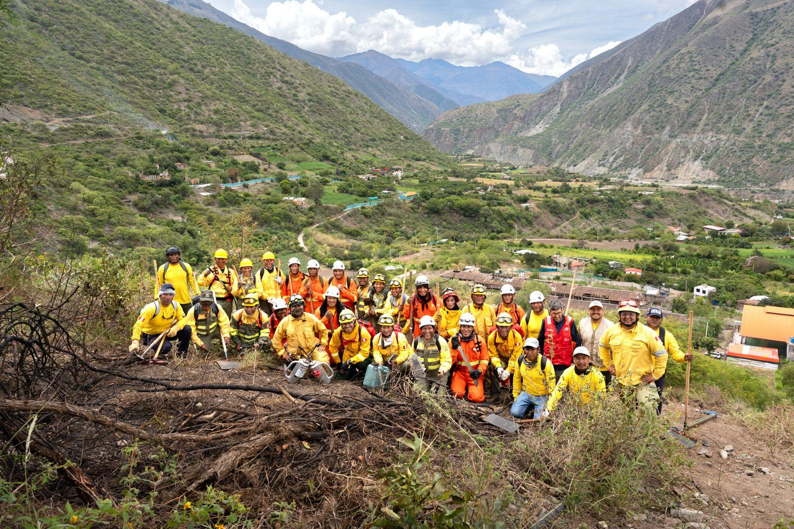
This summary distils the project's terminal report for a donor audience — presenting how each immediate outcome, output and activity was delivered against the commitments made at the outset, alongside the materials produced and the people and landscapes reached.
What's inside
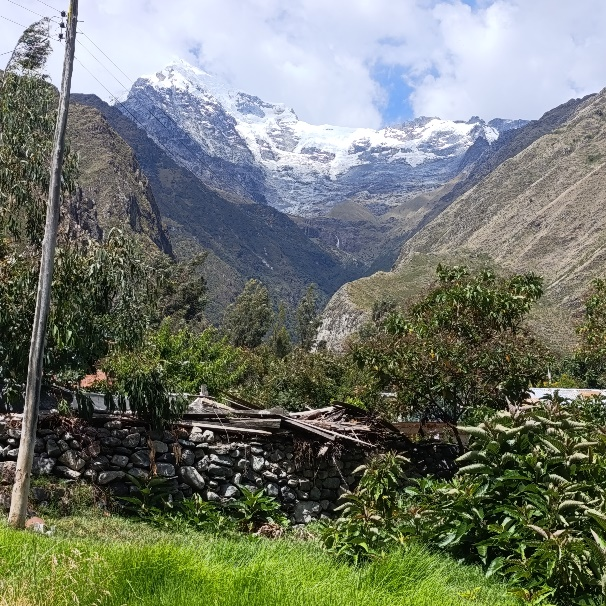
A donor-focused distillation of the project's terminal report, organised around the Global Fire Management Hub's five strategic pillars. It features the main outputs, the materials produced, the work on the ground and the lessons most relevant to sustaining the investment.
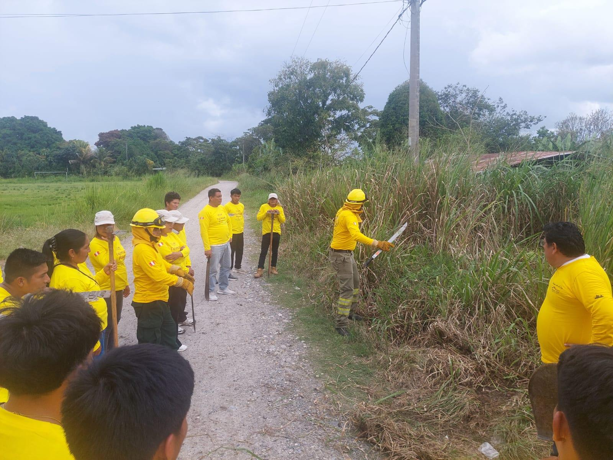
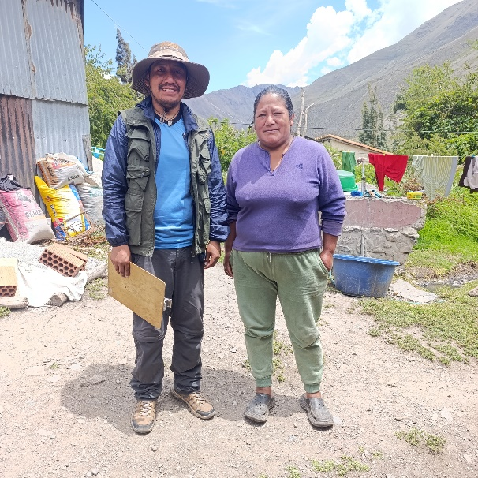
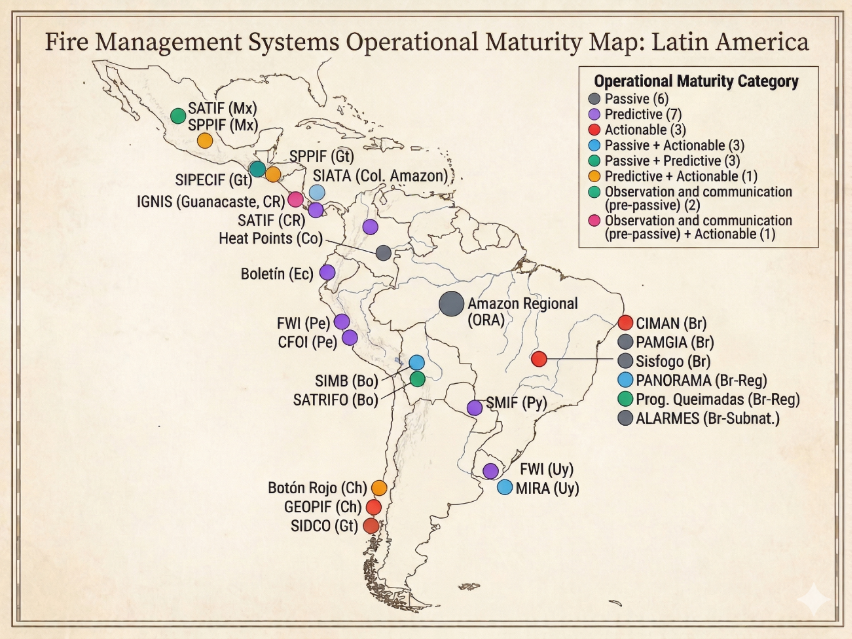
Why Integrated Fire Management
Across Latin America's forests, savannas and the Amazon, wildfire is no longer a seasonal nuisance but a structural threat — driven by forest degradation, agricultural expansion and a changing climate. Counting active fires hides the deeper drivers; reducing them requires prevention, not only suppression.
Yet fire is also part of how many landscapes and peoples live. Indigenous Peoples and local communities have used fire safely for generations, and cultural fire use — when recognised and integrated — can reduce fuel loads and prevent the catastrophic fires that destroy ecosystems and livelihoods.
Integrated Fire Management (IFM) brings these truths together: it balances prevention, preparedness, response and recovery; it works with communities rather than against them; and it treats fire as a phenomenon to be governed across borders, sectors and knowledge systems.
FAO launched the Global Fire Management Hub in 2023 with UNEP and partners to help countries make this shift. With Canada's support, this project turned that vision into concrete capacity, tools, policy and partnerships on the ground.
"The challenge is not the absence of fire, but the absence of integrated, anticipatory management that puts communities and ecosystems first."
— Framing of the Global Fire Management Hub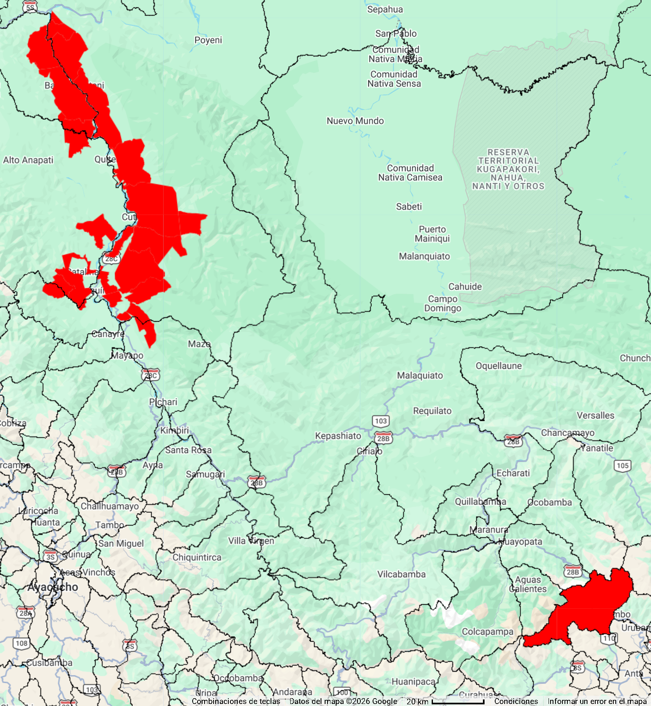
Objective & structure
The project worked toward a single overarching goal — improved conservation and restoration of ecosystems through IFM in partner countries — organised around the Fire Hub's five strategic, cross-cutting pillars.
A one-stop digital platform, a regional cooperation map, and gender-sensitive knowledge products and outreach.
Interoperability for fire emergencies and stronger regional and international fire-management networks.
Gender-responsive, targeted IFM training at national and regional levels, anchored in real capacity-gap assessments.
Better fire data, monitoring, and early-warning tools — including a fire module for multi-hazard early-warning systems.
Indigenous Peoples and local communities engaged as co-managers of fire, with knowledge, technologies and recognition.
Global in mandate with a Latin America & Caribbean focus, the project engaged Bolivia, Peru, Colombia and Ecuador directly, supported the Pan-Amazon region (with Brazil/IPAM), and strengthened regional cooperation across the LAC fire-management community — connecting to global mechanisms such as the Global Fire Monitoring Centre and the international Community-Based Fire Management network.
Achievement against targets
Against the project's results framework, delivery on capacity building, Indigenous and local engagement, collaboration and area conserved substantially surpassed end-of-project targets. The strongest results, drawn from the project's Corporate Results Tracker:
| Results-framework indicator | End target | Achieved | % | Status |
|---|---|---|---|---|
| Area under restoration (KMGBF Target 2) | ≥ 50 ha | 199.5 ha | 399% | Exceeded |
| Protected & conserved area (KMGBF Target 3) | ≥ 100,000 ha | 440,555 ha | 441% | Exceeded |
| Indigenous & local knowledge holders engaged | ≥ 100 | 508 | 508% | Exceeded |
| Reps accessing IFM knowledge & technologies | ≥ 100 | 588 | 588% | Exceeded |
| Actors participating in IFM trainings | ≥ 100 | 339 | 339% | Exceeded |
| Actors participating in fire-data training | ≥ 30 | 191 | 637% | Exceeded |
| New & improved collaborations for IFM | ≥ 10 | 12 | 120% | Exceeded |
| Stakeholders reporting understanding of IFM | ≥ 80% | 80% | 100% | Target met |
| IFM solutions using traditional knowledge | ≥ 5 / country | 5 | 100% | Target met |
| Stakeholders adopting fire-data & monitoring tools | ≥ 10 | 0 | 0% | In progress |
Still maturing. A few survey-based indicators (organisational uptake, adoption of tools) and impact-level metrics are being finalised as tools complete validation and rollout. The complete progress table — including baselines and qualitative measures — is in the project terminal report.
"Most planned outputs are completed or well advanced, with remaining deliverables mainly related to finalization, validation and rollout of selected tools and knowledge products."
— Terminal Report, GCP/GLO/1351/CANActivities completed
Across the project's ten activity groups, 90% of sub-activities are reported complete. The two remaining — a post-graduate IFM specialization proposal and the Community-Based Fire Management review (Vol. 2) — are in progress, with strong strategic groundwork already laid.
| Activity group | Done |
|---|---|
| Fire Hub digital platform | 3/3 |
| Gender-sensitive knowledge & outreach | 2/2 |
| Interoperability for fire emergencies | 1/1 |
| Regional fire networks strengthened | 2/2 |
| Capacity-gap assessment | 1/1 |
| Regional IFM training | 1/2 |
| Fire-data reporting training | 2/2 |
| Fire danger & early-warning systems | 3/3 |
| Support to Indigenous Peoples | 3/3 |
| Knowledge product on Indigenous role | 0/1 |
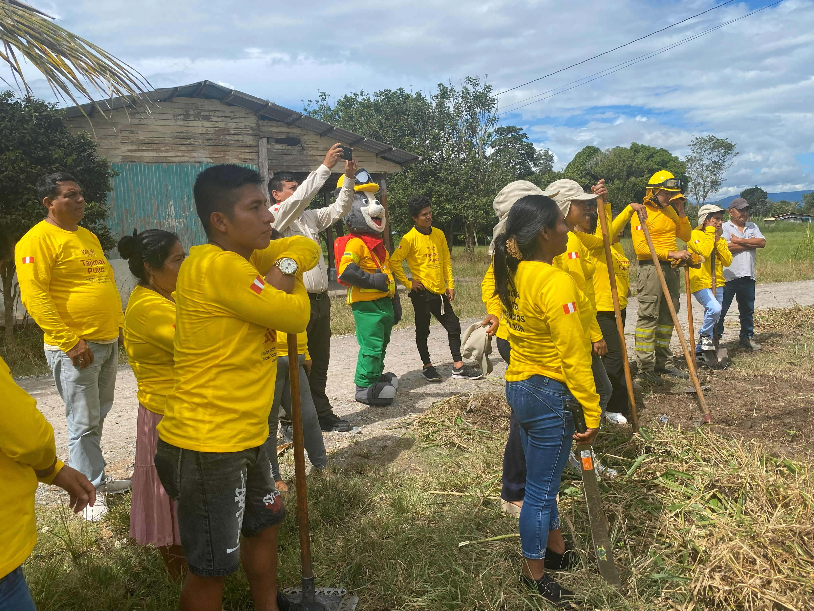
The two activities still advancing are strategic rather than operational. The post-graduate IFM specialization progressed through institutional mapping — Brazil's ICMBio had already structured a postgraduate programme awaiting ministerial authorization — positioning FAO and the Fire Hub as partners for higher-level IFM education in the region. The Community-Based Fire Management review (Vol. 2) is in preparation, building on a strong base of intercultural engagement and field demonstration.
The Global Fire Management Hub digital platform was developed as a 'one-stop digital shop on IFM', transferring existing materials — including resources from the Global Fire Monitoring Centre (GFMC) — and curating, rather than duplicating, the best available knowledge, tools and guidance so users can find what they need in one place.
To make the regional landscape legible, the project produced a comprehensive cooperation map of IFM initiatives in Latin America and the Caribbean — research and compilation across organisations and networks — laying the basis for a dynamic decision-support tool that improves visibility, coordination and strategic alignment among a fast-growing community of actors.
A suite of gender-sensitive knowledge products and communications — booklets, a fire glossary, a self-assessment tool and multimedia outreach (including a fire mascot engaging women, men, girls and boys) — carried IFM concepts to diverse audiences.
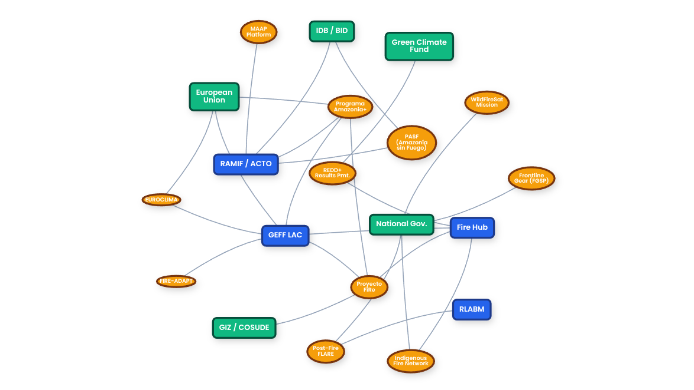
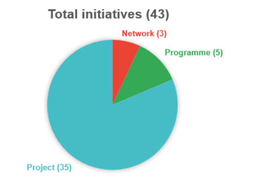
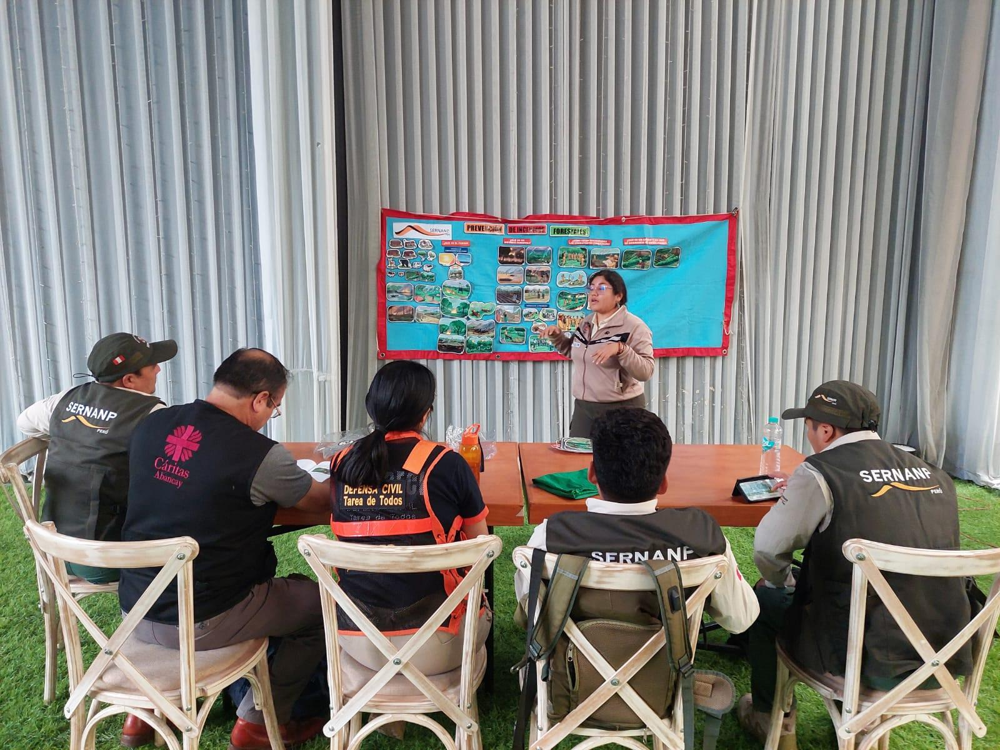
Pillar 1 · in the field
Knowledge products only matter when they reach people. The project paired its digital platform and cooperation map with face-to-face exchange — working sessions, posters and locally-adapted materials — so that fire managers, technicians and community leaders built a common language for IFM. A recurring lesson, now shaping delivery: technical information must be translated into accessible, territorially relevant formats to be used.
The one-stop platform was designed to curate and connect users to high-quality existing resources — including from the Global Fire Monitoring Centre — rather than duplicate content, keeping it accessible and easy to navigate. The accompanying cooperation map made the regional landscape legible, charting 43 initiatives across projects, programmes and networks to improve visibility, coordination and strategic alignment among a fast-growing community of actors.
Fire is transboundary, and the project treated it that way. It supported the design of an interoperability mechanism for fire emergencies — compiling data and drafting cooperation activities, guidelines and standard operating procedures to help countries act together when fire crosses borders.
It strengthened regional and international fire-management networks, convening Latin American fire experts and networks (such as the regional fire-expert groups and the Amazon Integrated Fire Management network) to develop a regional action plan, and supporting expert engagement at the Fire Hub Plenary (June 2025) and related global fora.
At country level, diagnostics in Bolivia, Peru, Colombia and Ecuador analysed legal and institutional frameworks — surfacing a shared finding: moving from the prohibition of fire toward its responsible regulation is the enabling condition for IFM.
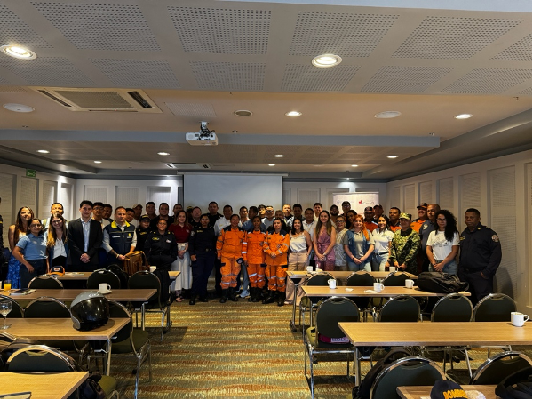
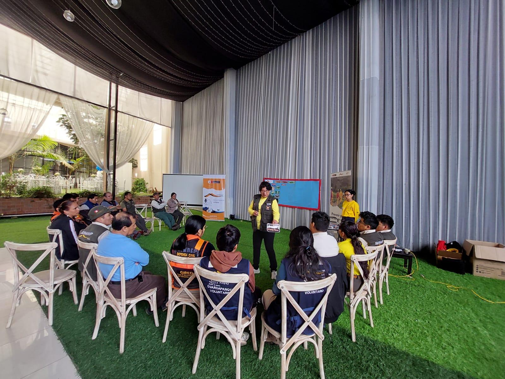
"Fire is a socio-ecological and transboundary phenomenon; isolated national responses are insufficient — regional coordination needs interoperable systems and harmonised protocols."
— Integrated Fire Management paper (Pan-Amazon)Pillar 2 · cooperation in practice
National and binational dialogues — including a Peru–Bolivia binational workshop and a Pan-Amazon encounter on the culture, use and management of fire — connected governments, Indigenous organisations, civil society and research networks. Their main outcome: a shared commitment to a standing Pan-Amazon coordination mechanism and to integrating local and scientific knowledge through the Fire Hub.
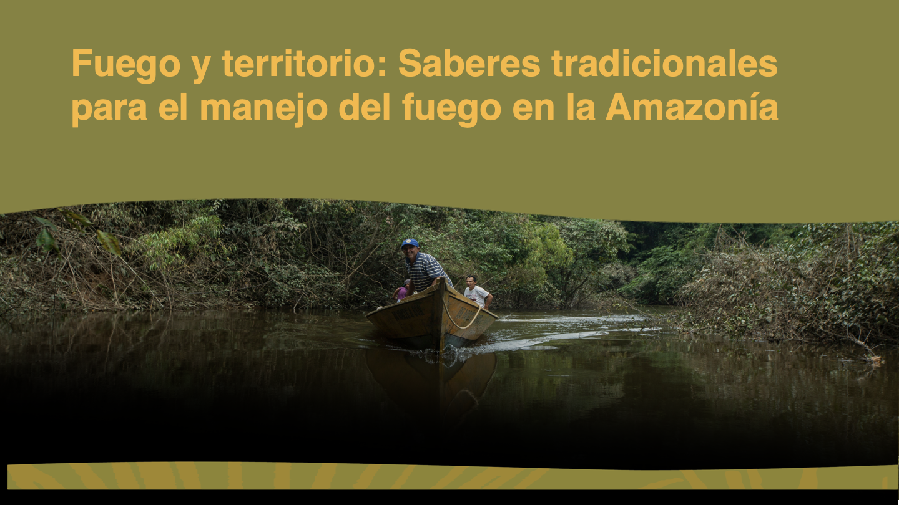
Fire and territory: traditional knowledge for fire management in the Amazon — a theme of the Pan-Amazon encounter (Santa Cruz de la Sierra, March 2026) convening Indigenous Peoples, traditional communities, governments and research networks from Bolivia, Brazil, Peru and partners.
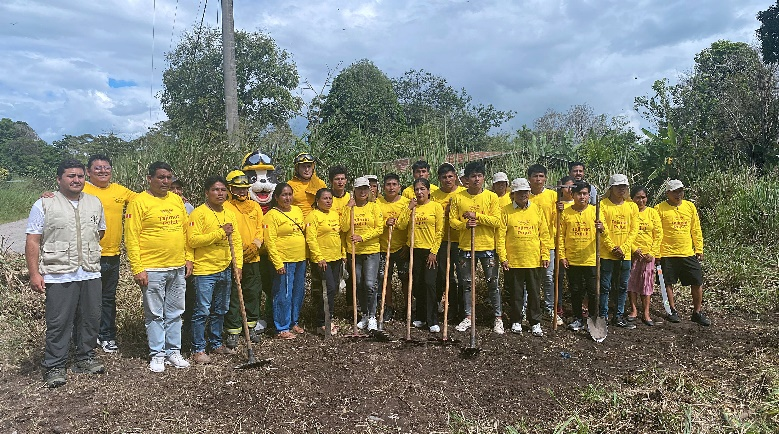
Capacity is the backbone of IFM. Beginning with a regional assessment of countries' capacity gaps, needs and priorities, the project developed and delivered regional training — building on and aligning with existing programmes and networks, and partnering with institutions that have a permanent presence in the territory.
The results exceeded expectations: 339 national and regional actors participated in IFM trainings against a target of 100, and a further 191 in dedicated fire-data training against a target of 30 — with deliberate attention to women's participation.
A key lesson now shaping delivery: build capacity progressively in the same territory — from basic to advanced — and site specialised courses at inter-regional 'nodes' to make the most of scarce qualified trainers.
"Capacity building is most effective when consolidated from basic to intermediate to advanced levels in the same territory, rather than through one-off courses."
— FAO Peru, lessons learned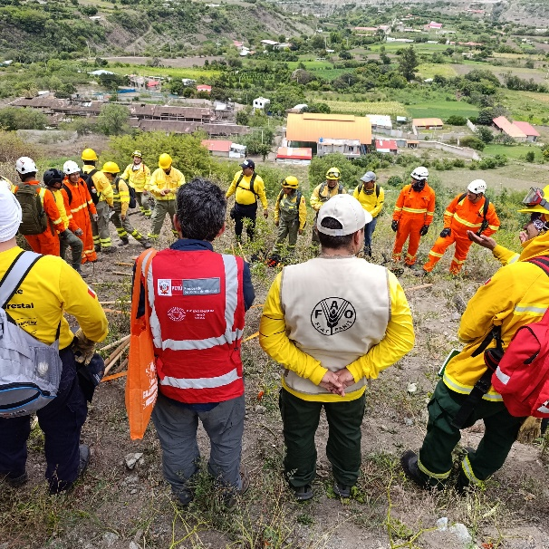
Pillar 3 · in the field
Country diagnostics pointed to a clear recommendation the project is helping advance: standardise forest-firefighter training and certify instructors, so that responders across institutions and borders 'speak the same technical language'. Peru's standardised curriculum for forest-fire combatants is a positive precedent the region can build on.
Two further lessons now shape how training is delivered. First, build capacity progressively in the same territory — from basic to advanced — rather than through one-off courses, and site specialised training at inter-regional 'nodes' to make the most of scarce qualified trainers. Second, anchor training to institutions with a permanent presence in the territory, so follow-up and continuity outlast the project. The regional package was developed to build on and align with existing programmes, including the Latin American Model Forest Network.
Good decisions need good data. The project improved the understanding and use of fire data through regional training, and conducted a regional stocktake of Fire Danger Rating Systems (FDRS) and Early Warning Systems (EWS) across Latin America and the Caribbean — assessing their operational maturity and their ability to translate data into timely, coordinated action.
It also advanced a fire module within multi-hazard early-warning systems (MHEWS), aligned with the global 'Early Warnings for All' agenda, and prototyped decision-aids that integrate science with traditional knowledge.
The guiding lesson: an alert that does not reach the community in an actionable format prevents no fire — technical metrics must become culturally appropriate guidance, delivered through the channels people actually use.
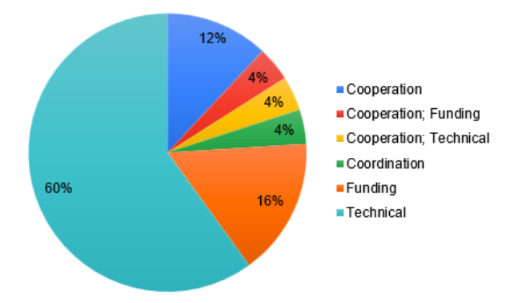
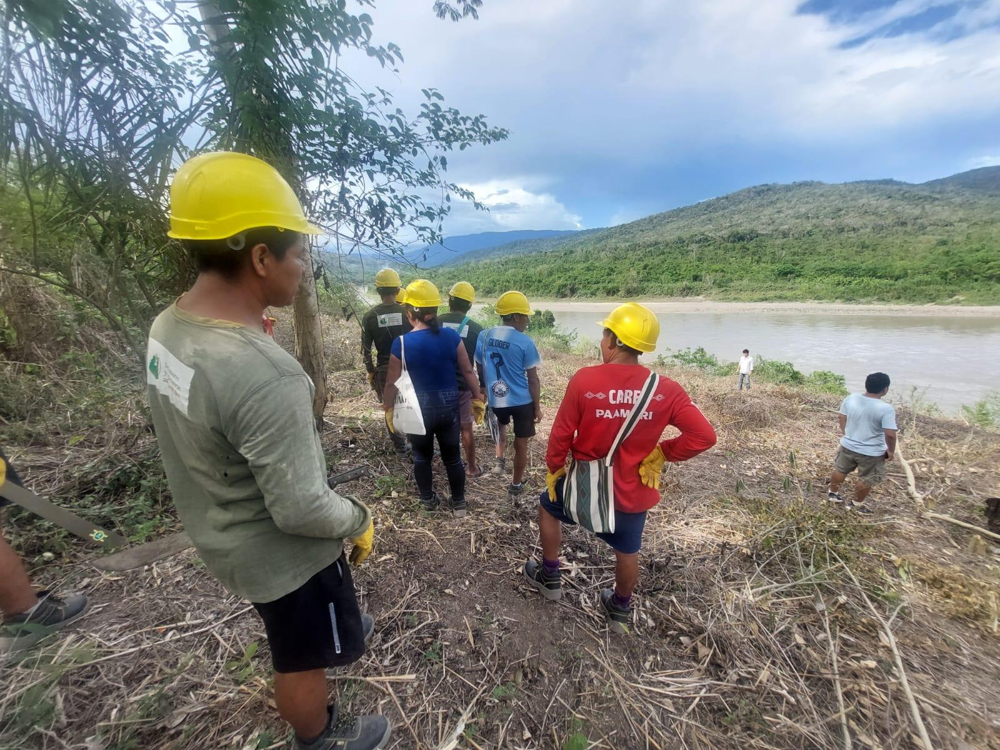
Together these products move the region from counting fires toward understanding risk — the foundation for prevention, anticipatory action and the structural investments that lower vulnerability over time.
"Technical excellence is useless if the alert does not reach the community in an actionable format — the 'last mile' is where risk is actually reduced."
— EWS Cooperation Mapping, LAC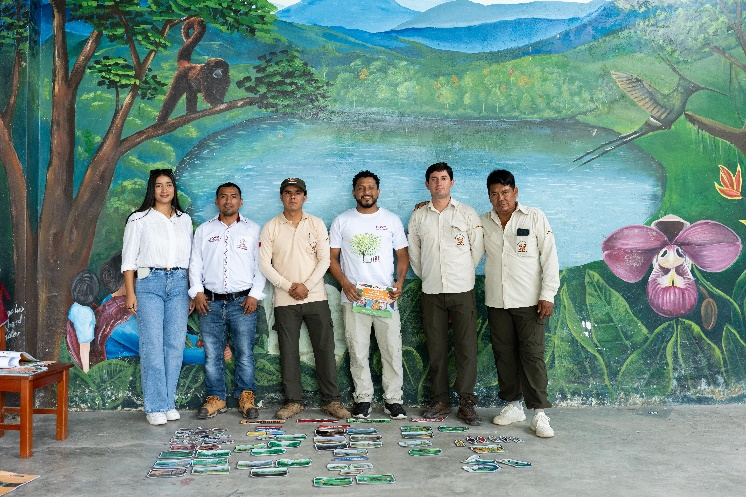
Indigenous Peoples and local communities are the first to face fire — and often the most effective at preventing it. The project facilitated intercultural workshops centred on communities, fostering exchange of traditional knowledge, cultural perspectives and technical expertise, and undertook gender-sensitive consultations with rural women's organisations and community leaders.
It is developing a knowledge product on the key role of Indigenous Peoples and local knowledge holders in IFM (a Community-Based Fire Management review), and supported demonstration activities through regional initiatives such as the Latin American Model Forest Network.
The engagement far exceeded targets: 508 Indigenous and local knowledge holders engaged (target 100) and 588 representatives gained access to IFM knowledge and technologies (target 100) — with gender responsiveness treated not as an add-on but as an operational necessity.
"Without Indigenous centrality and structural preventive financing, IFM does not consolidate — Indigenous Peoples and local communities must be formal co-managers of fire."
— Integrated Fire Management paper (Pan-Amazon)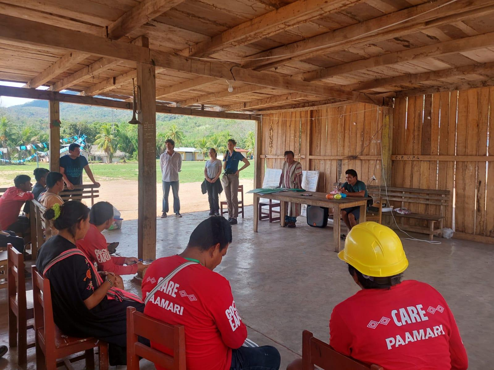
Pillar 5 · in the field
Where cultural fire use is recognised and integrated, fire becomes a managed tool rather than a threat — reducing fuel loads, protecting food security and preventing catastrophic fire. The project documented and helped integrate ancestral fire knowledge into management plans, and worked to clarify the role of community brigades beyond 'combat' — in prevention, monitoring and responsible fire use.
Concrete examples show the approach in action: in Bolivia's protected areas, Ayoreo and Chiquitano fire knowledge — hunting practices and the traditional chaqueo — is being codified into management plans, paired with safe-burning techniques and firebreaks; and through technical dialogue, communities have adapted traditional planting calendars to a changing climate using weather-station data. Gender-responsive consultations with rural women's organisations ensured these processes amplified, rather than overlooked, women's voices.
Knowledge products & tools
Beyond results on paper, the project produced a durable body of knowledge products, tools and analyses — designed to be used, adapted and scaled by countries and partners well past the project's end.
Educational booklets · the "Cartilhas" series
Developed with IPAM and partners, the IFM Cartilhas are a nine-part illustrated series — produced in Portuguese with Spanish editions — that takes communities and practitioners from first principles to regulation, good practice and coexistence with fire.
The foundations of IFM and why it matters.
The policy framework for managing fire.
Planning fire management at territory level.
Safe, prescribed and controlled burning.
Alternatives that reduce reliance on fire.
How fire shapes ecosystems.
A shared vocabulary for IFM.
The rules that govern fire use.
Living and managing fire together.
A full guide for the IFM Plan course.
Prescribed-fire training exchange, visualised.
Modular IFM curriculum materials.
All titles are catalogued in the FireHub deliverables library and available in the project repository.
The series is designed for community educators, brigade leaders and technicians — illustrated, plain-language and modular, with Spanish editions extending reach beyond Brazil. Together with the multimedia campaign and the regional IFM course, these materials support nationwide dissemination and the adoption of IFM practices across sectors and governance levels.
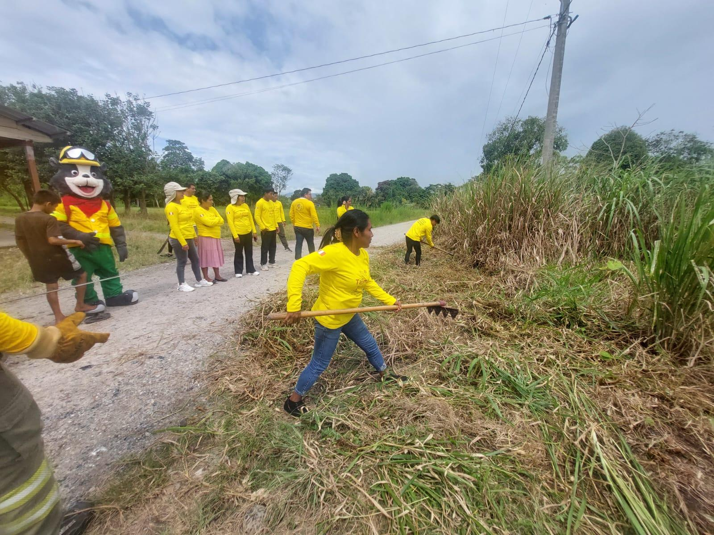
From the region
A legal-institutional analysis yielding five structural conclusions, and a roadmap for community brigades and progressive, territory-based training. Peru drove the project's strongest capacity numbers.
Documented ancestral fire knowledge (Ayoreo, Chiquitano) and safe-burning techniques; recommended legal reform and firefighter certification. Host of the Pan-Amazon encounter.
Integrated IFM diagnostics (DIMIF) across Orinoquía, Caribe and Pacífico, a legal analysis, and workshops advancing a co-responsibility strategy and early-warning monitoring.
Positioned IFM beyond suppression, supported harmonising the Environmental Code with the disaster-risk law, and catalysed a national IFM research network (RICMIF).
A Pan-Amazon encounter agreed a permanent forum and executive committee and produced an analytical IFM paper; the nine-part Cartilhas series and a modular course anchor community education.
An interoperability mechanism, a cooperation map and the operational maturity assessment, with links to the Global Fire Monitoring Centre and the international CBFiM Working Group.
For the donor & the next phase
Distilled from the project's diagnostics, roadmaps, workshops and the IFM paper, these are the lessons most relevant to sustaining and scaling the investment.
Legal recognition of responsible, prescribed fire is the enabling condition for IFM. Reforming punitive frameworks unlocks community-based prevention.
Indigenous Peoples and local communities are the first responders; their centrality, recognition and direct access to resources are preconditions for results.
Technical excellence is wasted if the alert does not reach communities in a usable format. Invest in the 'last mile' of early warning.
Consolidate training in the same territory from basic to advanced, anchored in institutions with permanent local presence.
Fire crosses borders; interoperable systems, harmonised protocols and a standing Pan-Amazon mechanism are needed.
Fewer hotspots do not mean lower risk. Sustained budget lines for prevention, equipment and coordination are essential.
A shared curriculum and instructor certification let responders coordinate safely across institutions and borders.
A standing science–policy interface ensures research and monitoring actually reach the people who make fire-management decisions.
The full set of 33 lessons, best practices, findings and technical recommendations — each linked to its source deliverable — is available in the FireHub Learnings register, organised into seven themes:
For a next phase, these point to a clear agenda: anchor IFM in enabling law, resource prevention structurally, invest in the 'last mile' of early warning, and keep Indigenous Peoples and local communities at the centre — sustained by dedicated budget lines and a standing regional coordination mechanism.
The road ahead
Canada's contribution did more than deliver outputs — it catalysed further resource mobilisation, enabling additional FAO-led projects to continue the Fire Hub's work. The platform, cooperation map, maturity assessment, training package and knowledge products are designed as living tools that countries and partners will keep using and adapting.
What continues: final validation and rollout of selected tools; official launch of the regional IFM course; nationwide dissemination of communication materials; the standing Pan-Amazon coordination mechanism; and the postgraduate IFM track advancing with regional institutions.
What it needs: the project's own evidence is clear — durable impact depends on dedicated budget lines, institutionalised mechanisms, and continued investment in the 'last mile' of training, equipment and early warning that reaches communities.
"Gender-responsive IFM is not simply a social objective but an operational necessity."
— Terminal Report, GCP/GLO/1351/CANIn closing
This work was made possible by the Government of Canada, through Global Affairs Canada, whose USD 6,262,405 contribution enabled FAO and its partners to advance Integrated Fire Management across the region — and to leverage further investment in the Global Fire Management Hub.
Partners & collaborators. The project was delivered by FAO with a wide community of partners, including UNEP, the Global Fire Monitoring Centre (GFMC), IPAM, CIFOR-ICRAF, FUTERRA, regional fire networks, the Latin American Model Forest Network, and the international Community-Based Fire Management Working Group — alongside national institutions and, above all, the Indigenous Peoples, local communities and volunteer brigades whose knowledge and courage are the heart of Integrated Fire Management.
The Global Fire Management Hub is hosted by FAO and was launched in 2023 with UNEP and partners to help the world live better with fire.
"One global response to landscape fire — built with communities, for communities."
— Global Fire Management HubTerminal Executive Summary · FAO Global Fire Management Hub · GCP/GLO/1351/CAN · Funded by Global Affairs Canada. Figures from the project Corporate Results Tracker and terminal report; photographs from project field activities. Prepared on the FAO Global Fire Management Hub visual identity.